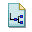
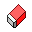
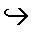
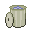

The purpose of each menu item is stated briefly here for reference purposes.
|  | New Machine | - | Creates a new machine window. |
|
| Open Machine | - | Load a previously created machine. |
|
| Save Machine | - | Save the currently selected machine for later use. |
| |
Save Machine As | - | Save the currently selected machine under a new filename. |
|
| New Tape | - | Creates a new tape, discarding the old one. |
|
| Open Tape | - | Load a previously created tape. |
|
| Save Tape | - | Save the tape for later use. |
| |
Save Tape As | - | Save the tape a new filename. |
| Undo | - | Undo the last editing operation that was performed in the current machine window. | |
| Redo | - | Redo the last editing operation that was undone in the current machine window. | |
| Cut | - | Cut selected items in the current machine window. | |

| Copy | - | Copy selected items in the current machine window. |

| Paste | - | Paste selected items in the current machine window. |

| Delete Selected items | - | Delete selected items in the current machine window. |

| Add States | - | Select the user interface mode to add states. |
| | Add Transitions | - | Select the user interface mode to add transitions. |
| Make Selection | - | Select the user interface mode to select a set of states and transitions. | |
|  | Eraser | - | Select the user interface mode to erase states and transitions. |
|  | Choose Start State | - | Select the user interface mode to choose a start state (initial state). |

| Choose Accepting State | - | Select the user interface mode to choose an accepting state (final state). |

| Choose Current State | - | Select the user interface mode to choose the state that the machine is in. |

| Step | - | Step the machine one execution cycle. |

| Execute | - | Automatically execute the machine until it halts or is stopped by the user. |

| Pause Execution | - | Pause the execution of the machine. |

| Stop Execution | - | Stop the execution of the machine. |
| | Slow | - | Set the execution speed to "Slow". |
| Medium | - | Set the execution speed to "Meduim". | |
| | Fast | - | Set the execution speed to "Fast". |
| | Super Fast | - | Set the execution speed to "Super Fast" . |
| | Ultra Fast | - | Set the execution speed to "Ultra Fast". |

| Move Read/Write Head to Start of Tape | - | Move the read/write head to the first cell at the start of the tape. |

| Reload Tape | - | Reload the tape to the state it was in when it was last saved. |
|  | Erase Tape | - | Erase the tape. |
| Configure Alphabet | - | Choose which symbols are in the alphabet for the current machine. |
| Help Contents | - | Open up the online help manual. | |
| About | - | Bring up a window of information about the current version of the program. |